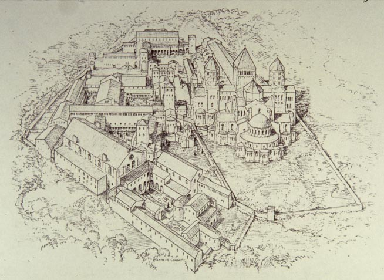
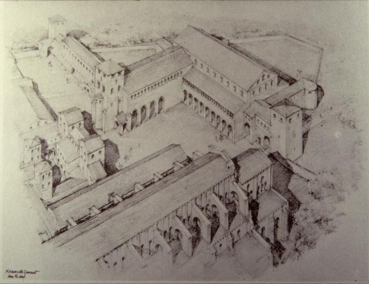

Cluny III's monastery
In 948, there had been about 70 monks living at Cluny. By 1085 there were about 200, and by 1109, about 300. New constructions needed to accomodate the monks; also, Cluny's importance in the worlds of church and secular politics meant that visitors were constantly coming to Cluny, so the monastery needed more agricultural buildings, storage, housing for visitors, etc. |
 |
 |
Hugh built a large hospice, some of which survives; it was originally 49 ft x 179 ft, with, on the ground floor, a stable 100 ft long (the building at the top of the image, just in front of the entrance to the church). |
Around 1080, the refectory of the monks was tripled in size, the dormitory was extended by one-third, and the infirmary was also enlarged. An abbot's palace was built on the remains of the old church, for receiving important guests. Notice that some of the remains of the old church stayed as chapel, and as a link from the cloisters to Cluny III. Finally, Hugh built a wall around the new monastery.
Other buildings in the monastery included:
For the monks: a chapter house (where they met in assembly), a chapel, refectory, heating room, bath, latrine, library (in the twelfth century it had 570 volumes), a scriptorium (place for copying manuscripts), and a sacristy. The monks' buildings were located on the interior of the monastery, separated by the buildings for secular people by walls, with separate entrances into the church, so that monastic isolation could be preserved.
For the novices: a dormitory with room for 30, and a chapel.
For the servants: accomodations for 100 (above the stable), kitchens, storerooms, bakery, barns, workshops for tailors and cobblers, goldsmiths, etc.
For the guests: a guest-house (for upper-class guests, room for 30 men and 30 women) with its own refectory and latrine, a hospice (room for 100) with refectory and latrine, a stable.
For the sick: an infirmary (room for 32 sick and/or retired monks), with kitchen, latrine, and chapel.
For the dead: a cemetery for monks, a cemetery for laypeople.